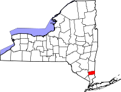

Property in New York is worth a combined $2.8 trillion.
Of that, about two thirds is taxed.
The other third, a full $856 million, is tax exempt.
The Journal News investigated where that money goes. Swipe down to find out more.
Religious Organizations


Ramapo, New York, has an extremely high concentration of synagogues and Yeshivas.
In 2015, Ramapo decided not to grant 240 religious exemptions.
But after appeals, 180 of these rejections were reversed.
Businesses

Hospitals

The state pays its counties taxes on that land.

Putnam County and Rockland County collect taxes on public land worth$1 billion.
Brockfort is a small village in Monroe County.